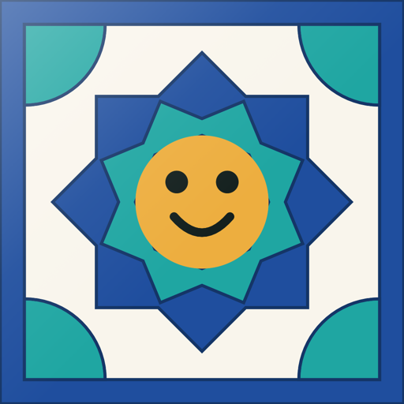
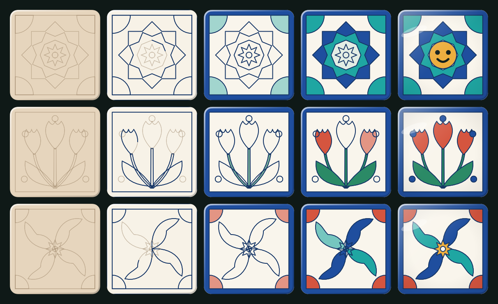

Birlikte konan kurallar
Günlük sınır, okul ve uyku modu. Çocuk kendi ekranında bütün kuralları görür; gizli hiçbir şey yoktur.

Ekran süresini kavgaya değil, anlaşmaya çevirin.
Mola, ebeveynle çocuğun kuralları birlikte koyduğu bir aile ekran süresi uygulaması. Yasak yok, mola var: neyin neden ve ne zamana kadar kapalı olduğu her zaman görünür.
Çok yakında App Store'da

Günlük sınır, okul ve uyku modu. Çocuk kendi ekranında bütün kuralları görür; gizli hiçbir şey yoktur.
Çocuk kısa bir nedenle süre ister, ebeveyn tek dokunuşla yanıtlar. İnat yerine konuşma.
Her odak oturumu bir çiniyi boyar: önce kontur, sonra renk, sonunda sır. Yarım kalan çini kaybolmaz, sonra tamamlanır.
Apple Watch'ta program seç, tur ve mola geçişlerini bileğinde hisset.
